library(survival)
library(curatedOvarianData)
data(TCGA_eset)
GGG = as.matrix(cbind(exprs(TCGA_eset)))
RecurrenceSurvObj = Surv( time = pData(TCGA_eset)[,"days_to_tumor_recurrence"],
event = pData(TCGA_eset)[,"recurrence_status"]=="recurrence")
BinaryRecurrenceAt2y = pData(TCGA_eset)[,"days_to_tumor_recurrence"] < 365*2
BinaryRecurrenceAt2y[ pData(TCGA_eset)[,"recurrence_status"]!="recurrence" & pData(TCGA_eset)[,"days_to_tumor_recurrence"] < 365*2 ] = NALecture 17 (March 29, 2023)
Finding partners
Many statistical learning tools acan be used to identify predictors that, as a group, help us classify observations. This lecture covers a baic exercise in model building which, although extremely simplistic compared to even the most common of methods like regularized regression or random forests, can help build intuition for the challenges of building model from high dimensional noisy data. I also use this opportunity to switch to a time-to-event outcome.
Data
In this section we will be utilizing data from the TCGA_eset dataset.
We will be considering continuous biomarker gene expressions in the TCGA study. The phenotype of interest will be a time-to-event variable, days_to_tumor_recurrence
We will then filter out the biomarkers with low IQR. A biomarker with a low IQR generally indicates a lack of variation within the range of possible values the biomarker takes. A lack of variation in turn may suggest a lack of discriminative ability. We will filter out genes with an IQR less than or equal to \(1\).
IQR.cutoff = 1
GGG.IQR = apply(GGG,1,IQR)
GGG.filtered = GGG[GGG.IQR>IQR.cutoff,]
GGG.cor = cor(t(GGG.filtered))One Marker at the Time
Then, we introduce a function that is similar to the CompScores function in preceeding sections. This new function, named CompScoresTE, will help us compute scoring metrics for recurrence based on marginal associations. Specifically, for each biomarker it computes the coefficient resulting from a Cox Proportional Hazards model fit on the biomarker, the negative log p-value of the coefficient, and the IQR of the biomarker.
library(survival)
library(survcomp)Loading required package: prodlimCompScoresTE = function(XX,YY){
NGenes = nrow(XX)
ScoreNames = c("coxRR","nlpvalue","IQR")
SSS = data.frame(matrix(NA,NGenes,length(ScoreNames)))
colnames(SSS) = ScoreNames
for (gg in 1:NGenes){
cox.out = coxph(YY ~ XX[gg,])
SSS[gg,"nlpvalue"] = -log(summary(cox.out)$coefficients[,"Pr(>|z|)"])
SSS[gg,"coxRR"] = summary(cox.out)$coefficients[,"exp(coef)"]
SSS[gg,"IQR"] = IQR(XX[gg,])
}
return(SSS)
}
Scores = CompScoresTE(XX=GGG.filtered,YY=RecurrenceSurvObj)From this, we can resample the labels and obtain a null distribution for our data. We then set a cutoff of \(1.2\) for the coefficient from the Cox Proportional Hazards model and \(7\) for the negative log p-value of the coefficient. We then can tabulate which biomarkers are above these two values, in both the null and observed distributions.
set.seed(1)
LabelsNull = sample(1:ncol(GGG.filtered))
RecurrenceSurvObjNull =
Surv( time = pData(TCGA_eset)[LabelsNull,"days_to_tumor_recurrence"], event = pData(TCGA_eset)[LabelsNull,"recurrence_status"]=="recurrence")
ScoresNull = CompScoresTE(XX=GGG.filtered,YY=RecurrenceSurvObjNull)
table(Scores[,"coxRR"]>1.2)
FALSE TRUE
2180 9 table(ScoresNull[,"coxRR"]>1.2)
FALSE TRUE
2185 4 table(Scores[,"nlpvalue"]>7)
FALSE TRUE
2183 6 table(ScoresNull[,"nlpvalue"]>7)
FALSE TRUE
2187 2 Two Markers at the Time
Linear Combination
We will now compute scores for pairs and pick the best partner biomarker. We will also examine all possible additional variables in a multivariable model.
Here one of the two partners is fixed (in this case the winner of the one-gene-at-the-time competition). The score for the pair is the Wald test for the model as a whole (both variables in vs no variable in).
CompScoresPairs1 = function(XX,YY,gg0){
NGenes = nrow(XX)
ScoreNames = c("coxRR0","coxRRa","nlpvalueW","cor")
SSS = data.frame(matrix(NA,NGenes,length(ScoreNames)))
colnames(SSS) = ScoreNames
for (gg in (1:NGenes) ){
cox.out = coxph(YY ~ XX[gg,]+XX[gg0,])
SSS[gg,"coxRR0"] = summary(cox.out)$coefficients[2,"exp(coef)"]
SSS[gg,"coxRRa"] = summary(cox.out)$coefficients[1,"exp(coef)"]
SSS[gg,"nlpvalueW"] = - log ( summary(cox.out)$wald["pvalue"] )
SSS[gg,"cor"] = cor(XX[gg,],XX[gg0,])
}
return(SSS)
}
TopGene = (1:nrow(Scores))[Scores[,"nlpvalue"]==max(Scores[,"nlpvalue"])]
TopGenes7 = (1:nrow(Scores))[Scores[,"nlpvalue"]>7]
ScoresPairs1 = CompScoresPairs1(XX=GGG.filtered,YY=RecurrenceSurvObj,gg0=TopGene)
TopPair1 = (1:nrow(ScoresPairs1))[ScoresPairs1[,"nlpvalueW"]==max(ScoresPairs1[,"nlpvalueW"])]We can then plot the single predictor negative log p-value against the negative log p-value associated with multiple variables.
The lone point on the right is the best gene paired with itself, so the horizontal line represents the “bar” we need to meet for the pair to be better than the single.
Colors highlight with positive (blue) or negative (orange) correlation with the top gene, exceeding .1 in absolute value.
plot( Scores[,"nlpvalue"],ScoresPairs1[,"nlpvalueW"], pch=".", cex=5,
ylab="Mutivariable negative log p-value",
xlab="Single predictor negative log p-value" )
abline(h=Scores[TopGene,"nlpvalue"])
abline(0,1)
PosCor = ScoresPairs1[ ,"cor"] > .1
NegCor = ScoresPairs1[ ,"cor"] < - .1
points( Scores[ PosCor,"nlpvalue"],
ScoresPairs1[ PosCor,"nlpvalueW"], pch=".", col="blue", cex=5 )
points( Scores[ NegCor,"nlpvalue"],
ScoresPairs1[ NegCor,"nlpvalueW"], pch=".", col="orange", cex=5 )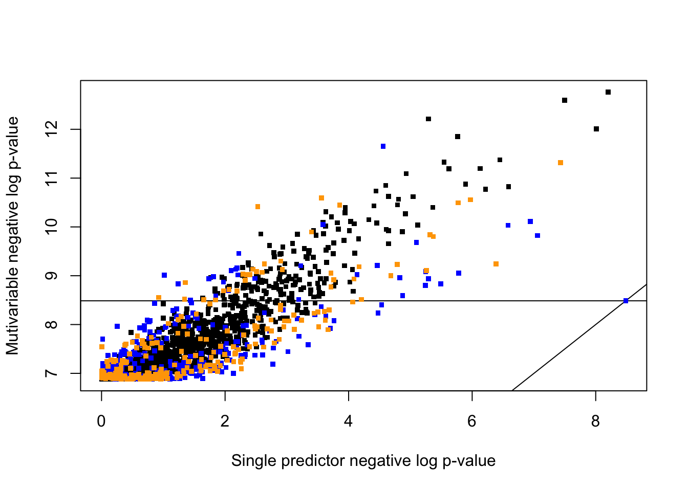
Note
Comment
Plain Averaging
We now take a slightly different approach by computing scores by pairs, picking one biomarker, and then looking at all possible “averaging partners”.
CompScoresPairs2 = function(XX,YY,gg0){
NGenes = nrow(XX)
ScoreNames = c("coxRRa","nlpvalueW","cor")
SSS = data.frame(matrix(NA,NGenes,length(ScoreNames)))
colnames(SSS) = ScoreNames
for (gg in 1:NGenes) {
XXa = ( XX[gg,]+XX[gg0,] ) / 2
cox.out = coxph(YY ~ XXa)
SSS[gg,"coxRRa"] = summary(cox.out)$coefficients[1,"exp(coef)"]
SSS[gg,"nlpvalueW"] = - log ( summary(cox.out)$wald["pvalue"] )
SSS[gg,"cor"] = cor(XX[gg,],XX[gg0,])
}
return(SSS)
}
ScoresPairs2 = CompScoresPairs2(XX=GGG.filtered,YY=RecurrenceSurvObj,gg0=TopGene)
TopPair2 = (1:nrow(ScoresPairs2))[ScoresPairs2[,"nlpvalueW"]==
max(ScoresPairs2[,"nlpvalueW"])]
TopPartners11 = (1:nrow(ScoresPairs2))[ScoresPairs2[,"nlpvalueW"]>11]
TopPartnersNegCor = (1:nrow(ScoresPairs2))[ScoresPairs2[,"nlpvalueW"]>11 &
ScoresPairs2[ ,"cor"] < - .1]
TopPartnersPosCor = (1:nrow(ScoresPairs2))[ScoresPairs2[,"nlpvalueW"]>11 &
ScoresPairs2[ ,"cor"] > .1]The plot of interest would then be the single predictor negative log p-value against the averaged predictor negative log p-value.
plot( Scores[,"nlpvalue"],ScoresPairs2[,"nlpvalueW"], pch=".", cex=3, xlab="Single variable negative log p-value", ylab="Averaged predictors negative log p-value" )
abline(h=Scores[TopGene,"nlpvalue"])
abline(0,1)
PosCor = ScoresPairs2[ ,"cor"] > .1
points( Scores[ PosCor,"nlpvalue"],ScoresPairs2[ PosCor,"nlpvalueW"],
pch=".", col="blue", cex=5 )
NegCor = ScoresPairs2[ ,"cor"] < - .1
points( Scores[ NegCor,"nlpvalue"],ScoresPairs2[ NegCor,"nlpvalueW"],
pch=".", col="orange", cex=5 )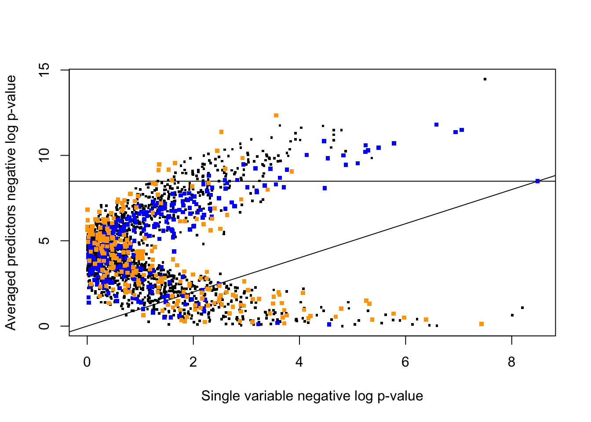
Note
Comment:
Why is the largest p-value encountered in this point and not the previous one?
Why the lobster claw?
The second best gene used to be the best partner in the linear combination, but now when we simply average the result is terrible. Why?
Some hints are in the following two figure, but it helps to puzzle it out for at least a bit before you proceed.
The following table reports the correlation, exponentiated coefficient value, and the associated scores.
cbind(ScoresPairs2[TopGenes7,c("cor","coxRRa")],Scores[TopGenes7,c("coxRR")]) cor coxRRa Scores[TopGenes7, c("coxRR")]
143 0.002878691 1.0729832 1.1662079
642 1.000000000 0.7770615 0.7770615
665 -0.079376471 0.9343275 1.3021766
727 0.066969147 0.6088374 0.7846375
799 0.179723073 0.7048702 0.8172432
1529 -0.190374846 1.0129224 1.2183982We can also plot the multivariable negative log p-value against the averaged predictor negative log p-value, further greying out those with marginal positive association with the outcome.
plot( ScoresPairs1[,"nlpvalueW"],ScoresPairs2[,"nlpvalueW"], pch=".", cex=5, xlab="Mutivariable negative log p-value", ylab="Averaged predictors negative log p-value" )
abline(0,1)
PosCor = ScoresPairs1[ ,"cor"] > .1
NegCor = ScoresPairs1[ ,"cor"] < - .1
PosCoef = ScoresPairs1[,"coxRRa"] > 1
points( ScoresPairs1[ PosCor,"nlpvalueW"],ScoresPairs2[ PosCor,"nlpvalueW"],
pch=".", col="blue", cex=5 )
points( ScoresPairs1[ NegCor,"nlpvalueW"],ScoresPairs2[ NegCor,"nlpvalueW"],
pch=".", col="orange", cex=5 )
points( ScoresPairs1[ PosCoef,"nlpvalueW"],ScoresPairs2[ PosCoef,"nlpvalueW"],
pch=".", col="gray", cex=5 )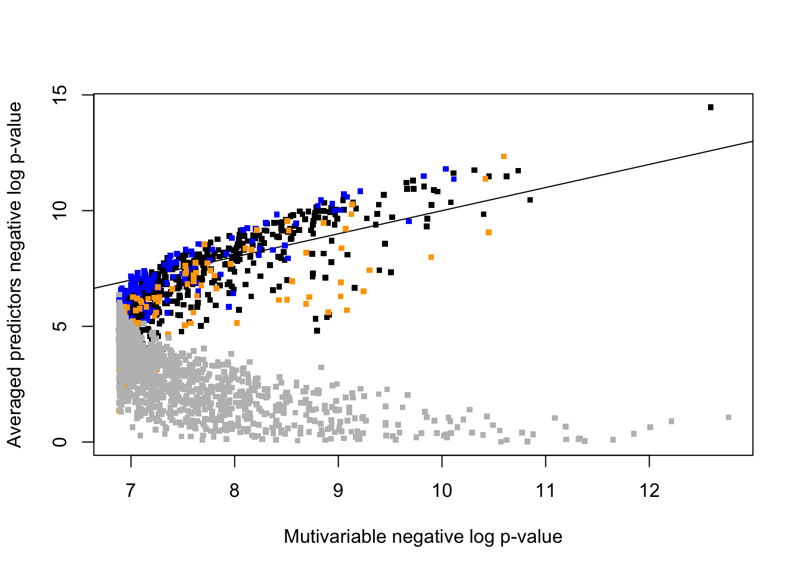
An additional plot below compares the top gene and the top pair as identified above.
plot( GGG.filtered[TopGene,], GGG.filtered[TopPair1,])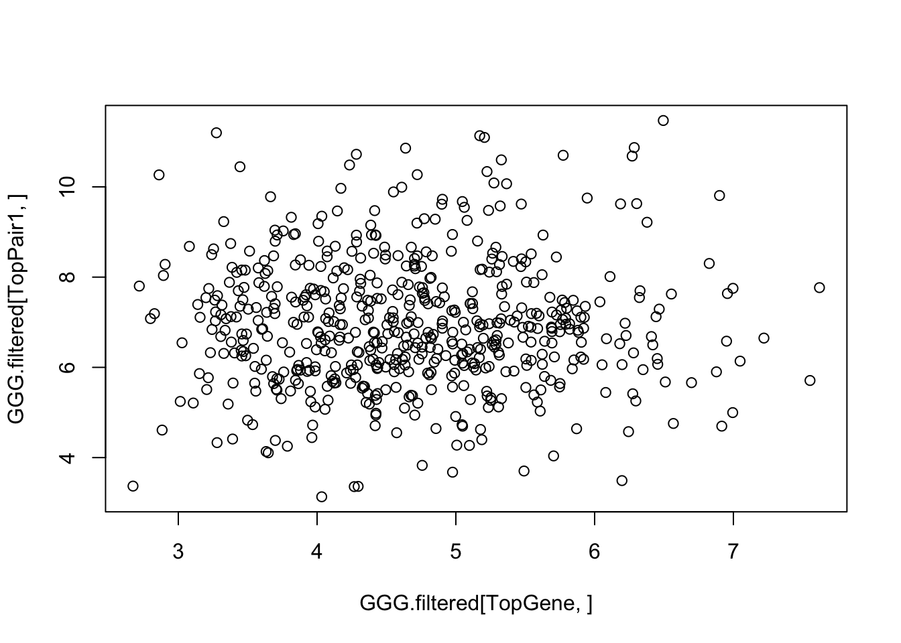
Supplementary Figure
A few miscellaneious plots, mostly to give you a sense for the fact that signal is weak and modeling is hard.
We now plot the expression values for the genes with a high combined predictor negative log p-value and that are positively correlated with the identified best gene. The orange/black points indicates recurrence/no recurrence, with recurrence being orange.
par(pty="s")
plot( GGG.filtered[TopGene,], GGG.filtered[TopPartnersPosCor[2],])
points(GGG.filtered[TopGene,], GGG.filtered[TopPartnersPosCor[2],],col=1+as.vector( pData(TCGA_eset)[,"recurrence_status"]=="recurrence") )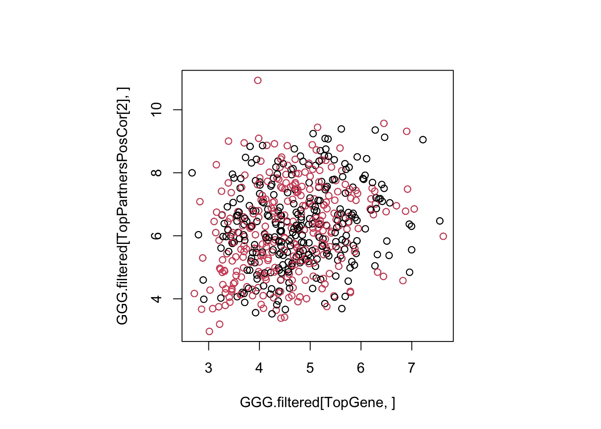
NG = nrow(GGG.filtered)
NS = length(as.vector(pData(TCGA_eset)[,"recurrence_status"]=="recurrence"))
par(pty="m")
plot(GGG.filtered[TopGene,], rnorm(NS,0,.1)+as.vector(pData(TCGA_eset)[,"recurrence_status"]=="recurrence") )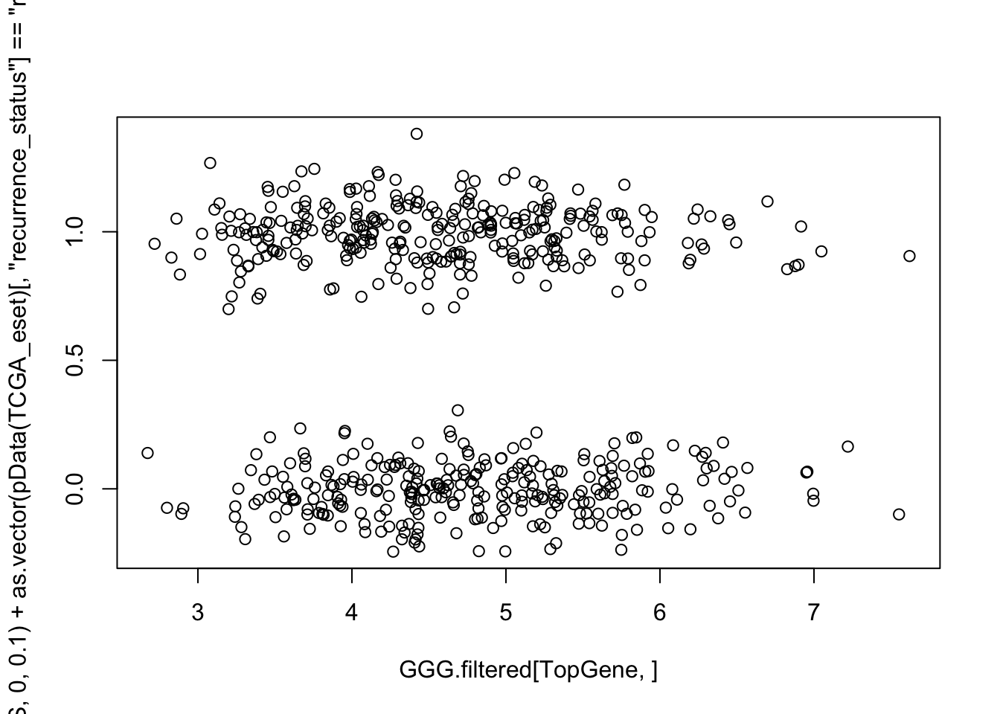
plot( .5 * (GGG.filtered[TopGene,]+GGG.filtered[TopPartnersPosCor[2],] ), rnorm(NS,0,.1)+as.vector(pData(TCGA_eset)[,"recurrence_status"]=="recurrence") )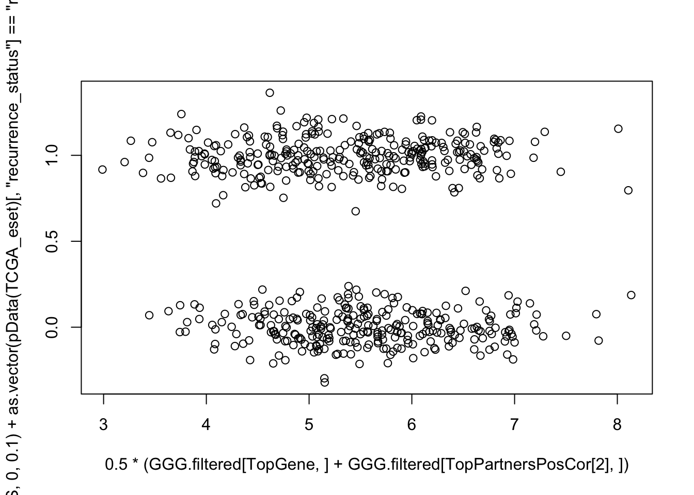
We can also plot the expression values for the genes with a high combined predictor negative log p-value and that are negatively correlated with the identified best gene. The red/black points indicates recurrence/no recurrence, with recurrence being red in color.
par(pty="s")
plot( GGG.filtered[TopGene,], GGG.filtered[TopPartnersNegCor[1],])
points(GGG.filtered[TopGene,], GGG.filtered[TopPartnersNegCor[1],],col=1+as.vector( pData(TCGA_eset)[,"recurrence_status"]=="recurrence") )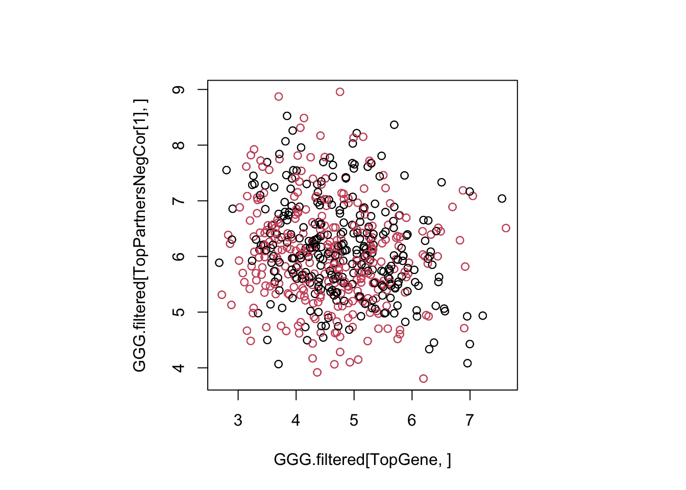
par(pty="m")
plot(GGG.filtered[TopGene,], rnorm(NS,0,.1)+as.vector(pData(TCGA_eset)[,"recurrence_status"]=="recurrence") )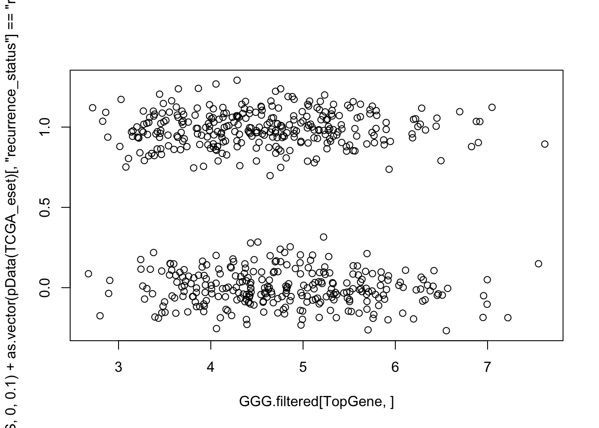
plot( .5 * (GGG.filtered[TopGene,]+GGG.filtered[TopPartnersNegCor[1],] ), rnorm(NS,0,.1)+as.vector(pData(TCGA_eset)[,"recurrence_status"]=="recurrence") )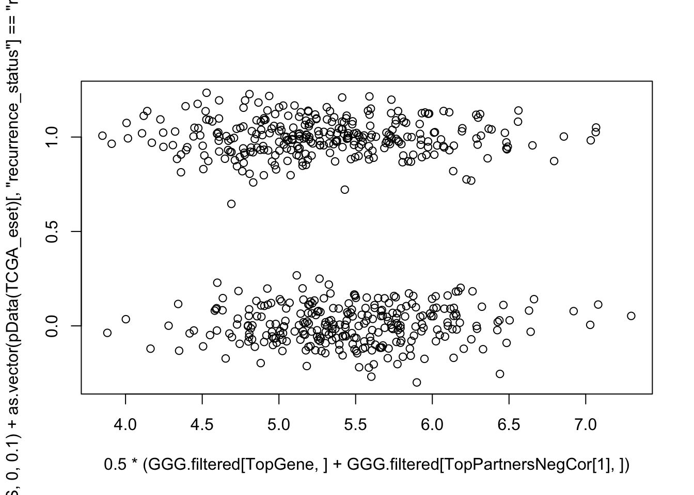
The following figures plot the expression values for the multivariable top pairs.
plot( GGG.filtered[TopGene,], GGG.filtered[TopPair1,])
plot( GGG.filtered[TopPair1,], GGG.filtered[TopPair2,])
We now plot the expression values for the top pairs by averaging.
plot( GGG.filtered[TopGene,], GGG.filtered[TopPair2,])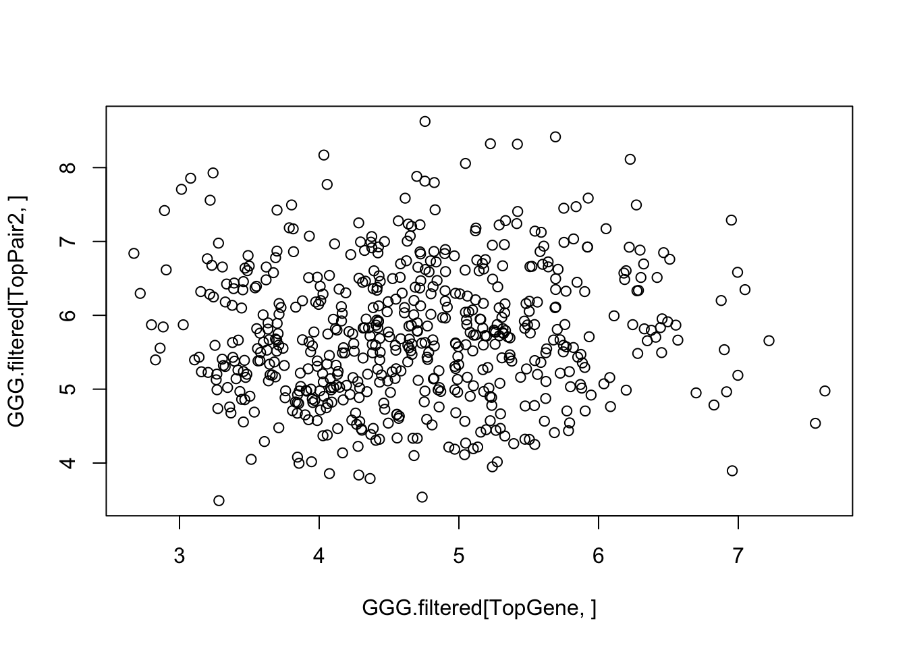
plot( GGG.filtered[TopPair1,], GGG.filtered[TopPair2,])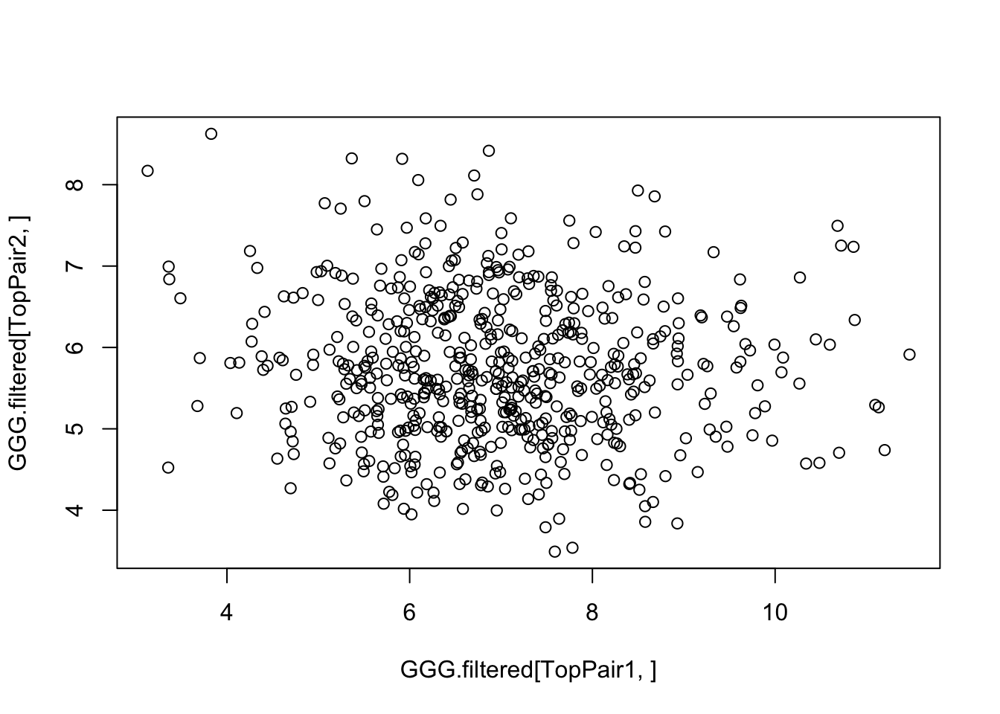
Here are more visualizations through a Kaplan-Meier Curve
km.as.one = survfit (RecurrenceSurvObj ~ 1)
km.by.topgene = survfit (RecurrenceSurvObj ~ GGG.filtered[TopGene,] > median(GGG.filtered[TopGene,]))
km.by.toppair1 = survfit (RecurrenceSurvObj ~ GGG.filtered[TopPair1,]>
median(GGG.filtered[TopPair1,]))
km.by.toppair2 = survfit (RecurrenceSurvObj ~ GGG.filtered[TopPair2,]>median(GGG.filtered[TopPair2,]))plot(km.as.one)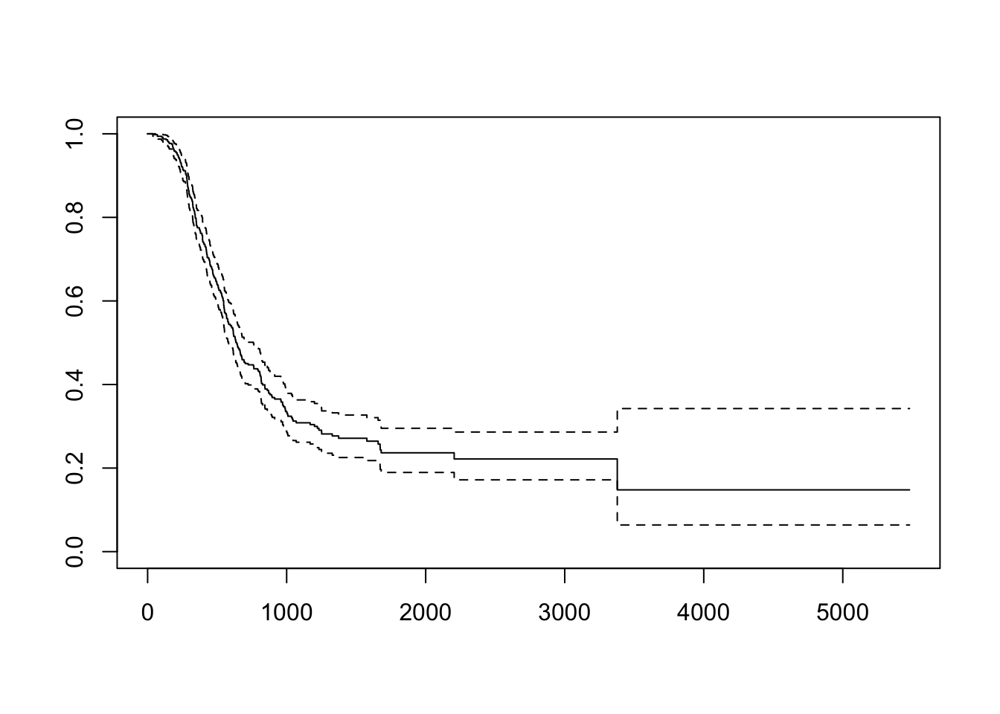
plot(km.by.topgene)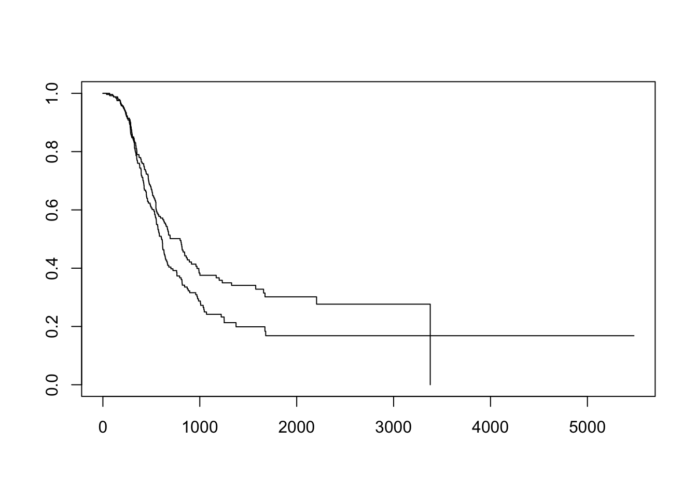
plot(km.by.toppair1)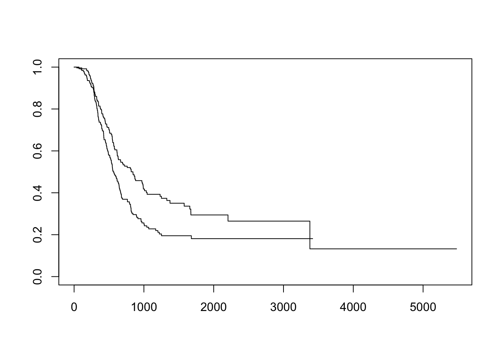
plot(km.by.toppair2)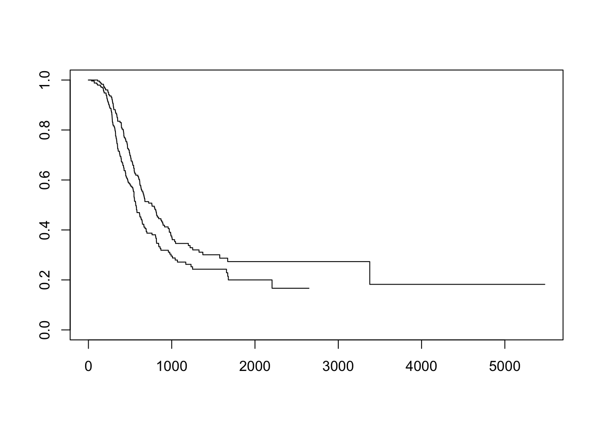
We can also obtain the Cox Proprotional Hazards Model.
cox.pair1 = coxph(RecurrenceSurvObj ~ GGG.filtered[TopGene,]+GGG.filtered[TopPair1,])
summary(cox.pair1)Call:
coxph(formula = RecurrenceSurvObj ~ GGG.filtered[TopGene, ] +
GGG.filtered[TopPair1, ])
n= 522, number of events= 266
(56 observations deleted due to missingness)
coef exp(coef) se(coef) z Pr(>|z|)
GGG.filtered[TopGene, ] -0.24020 0.78647 0.06799 -3.533 0.000411 ***
GGG.filtered[TopPair1, ] 0.14613 1.15735 0.04258 3.432 0.000598 ***
---
Signif. codes: 0 '***' 0.001 '**' 0.01 '*' 0.05 '.' 0.1 ' ' 1
exp(coef) exp(-coef) lower .95 upper .95
GGG.filtered[TopGene, ] 0.7865 1.272 0.6883 0.8986
GGG.filtered[TopPair1, ] 1.1574 0.864 1.0647 1.2581
Concordance= 0.579 (se = 0.02 )
Likelihood ratio test= 25.72 on 2 df, p=3e-06
Wald test = 25.53 on 2 df, p=3e-06
Score (logrank) test = 25.6 on 2 df, p=3e-06pair2.mean = ( GGG.filtered[TopGene,]+GGG.filtered[TopPair2,] ) / 2
cox.pair2 = coxph(RecurrenceSurvObj ~ pair2.mean)
summary(cox.pair2)Call:
coxph(formula = RecurrenceSurvObj ~ pair2.mean)
n= 522, number of events= 266
(56 observations deleted due to missingness)
coef exp(coef) se(coef) z Pr(>|z|)
pair2.mean -0.49620 0.60884 0.09887 -5.019 5.2e-07 ***
---
Signif. codes: 0 '***' 0.001 '**' 0.01 '*' 0.05 '.' 0.1 ' ' 1
exp(coef) exp(-coef) lower .95 upper .95
pair2.mean 0.6088 1.642 0.5016 0.739
Concordance= 0.593 (se = 0.02 )
Likelihood ratio test= 26.28 on 1 df, p=3e-07
Wald test = 25.19 on 1 df, p=5e-07
Score (logrank) test = 25.36 on 1 df, p=5e-07cor( t(GGG.filtered[c(TopGene,TopPair1,TopPair2),]) ) FAH ATF3 FZD4
FAH 1.000000000 0.002878691 0.06696915
ATF3 0.002878691 1.000000000 -0.06247520
FZD4 0.066969147 -0.062475205 1.00000000